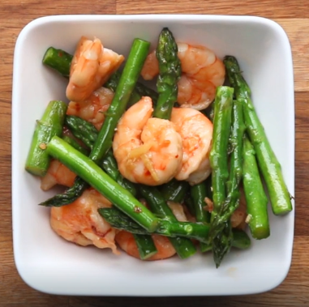

Shrimp and Asparagus Stir Fry

Ingredients
- 4 tablespoons olive oil
- 1 lb raw shrimp
- 1 lb asparagus
- 1 teaspoon salt
- ½ teaspoon crushed red pepper
- 1 teaspoon garlic, minced
- 1 teaspoon ginger, minced
- 1 tablespoon low sodium soy sauce
- 2 tablespoons lemon juice
Preparation
- In a large frying pan, heat 2 tablespoons olive oil over medium-high heat.
- Add shrimp to the pan, then season with ½ teaspoon of salt and ½ teaspoon crushed red pepper. Cook until the shrimp is pink. Remove the shrimp from the pan and set aside.
- In the same pan, heat 2 tablespoons olive oil and add asparagus.
- Add ginger and garlic, then season with ½ teaspoon of salt. Stir frequently and cook until the asparagus is tender-crisp.
- Return the shrimp to the pan, then add soy sauce. Stir until the ingredients are well combined. Just before the dish is ready, add lemon juice, stir once more, then serve while hot.